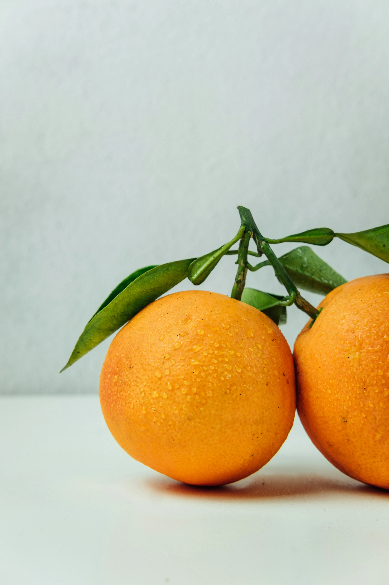

Cítricos de Valencia
Una selección premium de naranjas, limones y mandarinas cultivadas en la soleada Comunidad Valenciana. Su sabor y frescura son incomparables. La información del artículo detalla que se trata de fruta de temporada, recogida a mano para garantizar que llegue a tu casa en el mejor estado. Son perfectas para zumos o consumo directo.
